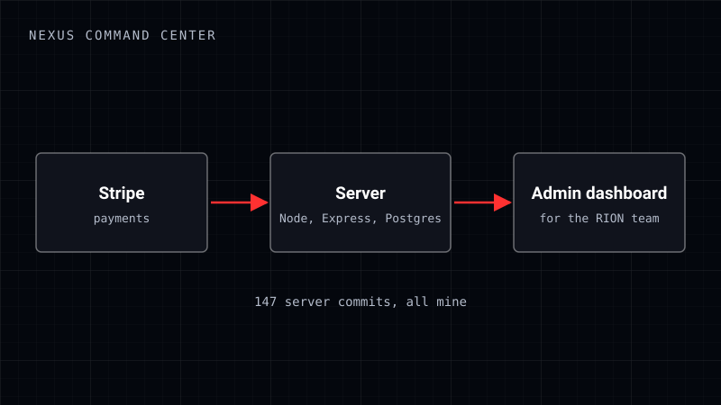

RION sub-project
NEXUS Command Center
An admin dashboard for RION’s Stripe payments, and the server behind it.
- Private repo

Payments needed to reach the team’s records.
RION takes payments through Stripe. Each payment has to land somewhere the team can see it, search it and trust it. Without that, someone checks Stripe by hand and copies numbers across.
NEXUS is RION’s multi-tenant client portal: an admin dashboard for staff, a client portal, and a backend that serves both. The Command Center is the payments side of it.
One server in the middle.
I wrote the server. It takes payments from Stripe, stores them in Postgres, and serves them to an admin dashboard so RION’s team sees the same record the payment system has.
The dashboard has 94 commits. The server has 147, and all of them are mine.
How it works
Payments come in
RION takes payments through Stripe. Each one has to reach the team’s records.
The server keeps them
A Node and Express server stores them in Postgres.
The team sees them
The admin dashboard shows the payments to the RION team.
By the numbers
- 147server commits, all mine
- 94dashboard commits
What I owned
- Wrote the server behind an admin dashboard for RION’s Stripe payments system.
- All 147 server commits are mine. The dashboard itself has 94 commits.
What I learned
A payments system is mostly about records that agree. When the server is the single place payments are stored, every screen tells the same story.
Counting commits is a blunt measure, but it is an honest one for who wrote what.